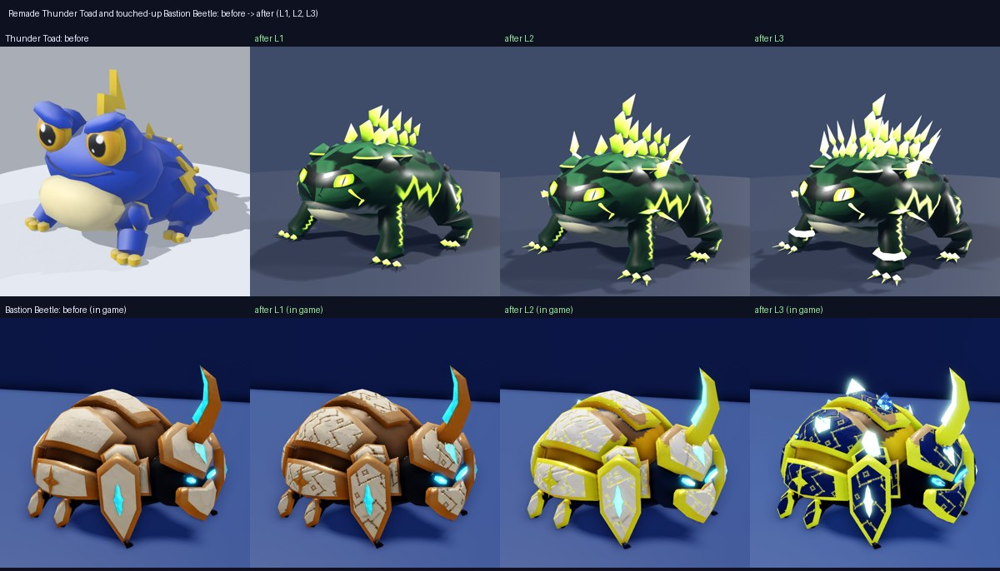
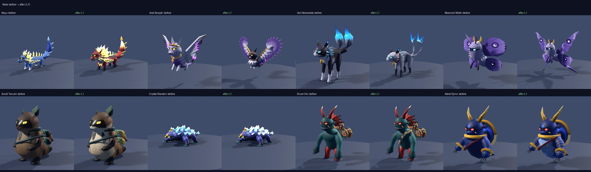
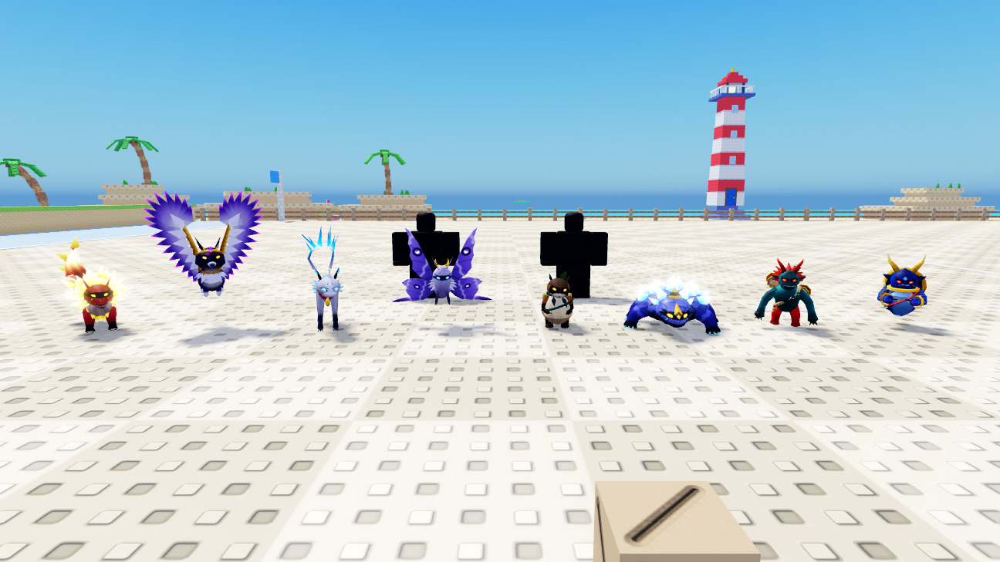
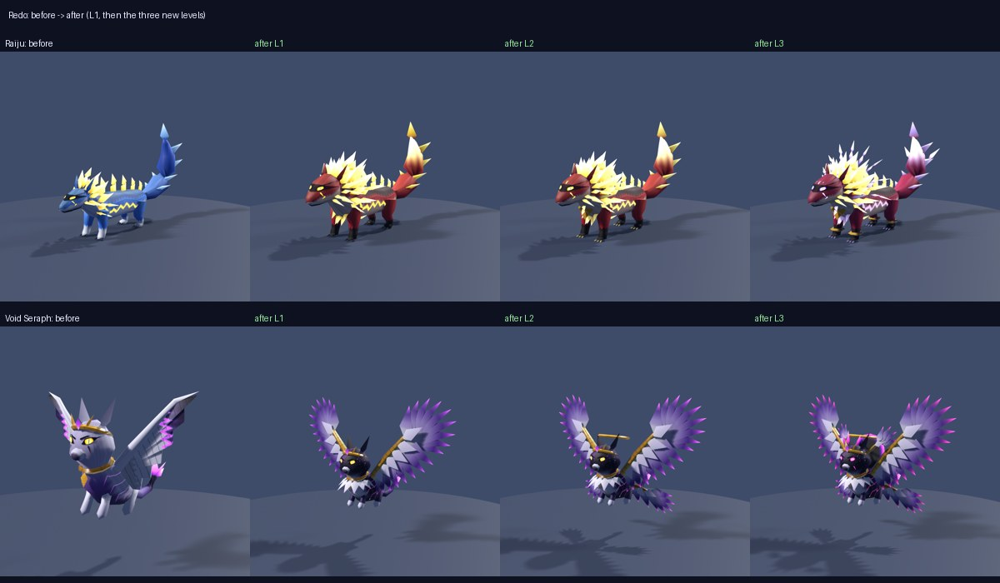

<title>Legendary Pet Previews</title>
<meta name="claude:viewport-fit-sides" content="cover">
<link rel="stylesheet" href="https://fonts.googleapis.com/css2?family=Baloo+2:wght@600;800&family=Nunito+Sans:wght@400;600&display=swap">
<style>
/* layout: one column, newest pet first; each pet = level sheet, animation clip, in-game still */
:root{--bg:#f1eef4;--panel:#ffffff;--fg:#1d1724;--muted:#615a6c;--accent:#b8862a;--line:#ddd6e4;
--display:"Baloo 2",system-ui,sans-serif;--body:"Nunito Sans",system-ui,sans-serif}
@media (prefers-color-scheme:dark){:root:not([data-theme="light"]){--bg:#120e18;--panel:#1c1624;--fg:#ece6f2;--muted:#a59cb2;--accent:#e2b552;--line:#2e2638;color-scheme:dark}}
:root[data-theme="dark"]{--bg:#120e18;--panel:#1c1624;--fg:#ece6f2;--muted:#a59cb2;--accent:#e2b552;--line:#2e2638;color-scheme:dark}
body{background:var(--bg);color:var(--fg);font-family:var(--body);font-size:15px;line-height:1.5;
padding-left:max(16px,env(safe-area-inset-left,0px));padding-right:max(16px,env(safe-area-inset-right,0px));padding-block:20px}
main{max-width:760px;margin:0 auto;display:flex;flex-direction:column;gap:22px}
h1{font-family:var(--display);font-weight:800;font-size:1.7rem;margin:0;text-wrap:balance}
.lede{color:var(--muted);margin:0}
section{display:flex;flex-direction:column;gap:12px}
.head{display:flex;flex-direction:column;gap:2px}
.tag{font-size:.72rem;letter-spacing:.08em;text-transform:uppercase;color:var(--accent);font-weight:600}
h2{font-family:var(--display);font-weight:600;font-size:1.3rem;margin:0}
figure{margin:0;background:var(--panel);border:1px solid var(--line);border-radius:12px;overflow:hidden}
figure img,figure video{display:block;width:100%;height:auto;max-width:100%}
figcaption{padding:10px 12px;color:var(--muted);font-size:.9rem}
</style>
<main>
<h1>Legendary Pet Previews</h1>
<p class="lede">The five Legendaries for Hatch or Snatch, newest first. Each pet: its three levels, its animations, and its ability in a Studio playtest.</p>

<section id="toad-beetle">
<div class="head"><span class="tag">Common pets &middot; done, installed (not saved)</span><h2>Thunder Toad remade, Bastion Beetle touched up</h2></div>
<figure><figcaption>Thunder Toad: remade from your Tempest card's shape as an edgy storm toad, bottle-green with near-black mottling, glowing lime lightning, spines and toe pads, narrow slanted lime slit eyes and a sly one-fang mouth (the card's blue and yellow now belongs to the Riot Hound). L2 "Storm Croaker" adds shoulder and cheek bolts and a taller crest, L3 "Thunder King" a lightning crown and bigger spines. 1,341 / 1,469 / 1,773 tris. Its own effects are recoloured lime. Bastion Beetle: the cream and bronze look kept, with bigger, sharper eyes and engraved, scratched plates; the engraving glows at L2 (gilded) and L3 (royal). All three common pets (Toad, Beetle, Ring Imp) are now marked Common.</figcaption></figure>
<figure><video src="redo/toad_anims.mp4" controls muted loop playsinline></video><figcaption>The new Thunder Toad at L3: idle, crawl, hop-run and the croak.</figcaption></figure>
</section>

<section id="redo">
<div class="head"><span class="tag">Legendary redo &middot; done, installed (not saved)</span><h2>Eight pets redone after review</h2></div>
<figure><figcaption>Before &rarr; after at L1. Raiju: bigger chest, head and lightning mane, now crimson with white-hot lightning. Void Seraph: void-black nebula coat with stars, pearl ruff, big layered feather wings. Veil Nekomata: longer, slimmer, arched, thin whip tails with ghost-fire wisps, ghost-silver with indigo ink and a crimson collar (apart from the Witch Cat). Moonveil Moth: pointed hooked forewings over pointed tailed hindwings. Scroll Tanuki: lighter coat, cream belly and muzzle, bright teal and gold scrolls. Crystal Warden: brighter crystals and a third bigger in game. Drum Oni: rope sash and tiger stripes across the chest. Astral Djinn: pale chest panel, nebula back, gold rune bands and a constellation (collar fix kept).</figcaption></figure>
<figure><video src="redo/all_eight_anims.mp4" controls muted loop playsinline></video><figcaption>All eight at L3, a few seconds each: idle, walk / flight and their abilities.</figcaption></figure>
<figure><figcaption>In Roblox Studio at L1 (follower size, textured and animating). A sandbox playtest of the Raiju at L3: Knockback and Storm Ball fire with its own effects.</figcaption></figure>
<figure><figcaption>Raiju: bigger barrel chest, a big wedge head and a three-ring lightning mane; a crimson coat with a black storm saddle and socks and white-hot yellow lightning, so it no longer reads as the blue-and-gold Riot Hound. L2 "Storm Herald" (gold chest plate, bolt pauldrons), L3 "Thunder God" (violet-white lightning halo and crown). 1,627 / 1,699 / 2,179 tris. Void Seraph: a void-black coat with a magenta nebula and glowing stars, a pearl chest ruff, gold circlet and wing arms, and big layered angel wings of pointed feathers with glowing magenta tips. L2 "Twin Halo" (second feathered wing pair, halo), L3 "Six-Winged Void" (temple wings, void eye, crystal crown). 1,343 / 1,687 / 1,895 tris. Both installed in Studio with their own effects (the Raiju's blue effect parts recoloured crimson and violet).</figcaption></figure>
<figure><video src="redo/raiju_seraph_anims.mp4" controls muted loop playsinline></video><figcaption>The new Raiju and Void Seraph at L3: idle, walk / flight, run, and both abilities.</figcaption></figure>
</section>

<section id="reshapes">
<div class="head"><span class="tag">Body reshapes · done</span><h2>Pets that shared one body, reshaped</h2></div>
<figure><figcaption>Top: before → after at L1. Raiju: a long, low lightning weasel in bright cobalt. Aegis Kirin: a tall slender deer. Shrine Lion: a heavy komainu with a huge head and mane that sits on guard. Scroll Tanuki: upright on its hind legs with a big belly. Compass Hare: sits up on big haunches. Crystal Warden: a low crystal-plated crawler. Veil Nekomata: higher on long thin legs with an arched back. Riot Hound keeps the lean wolf body. Middle: the Drum Oni's chest triangle is gone and the Astral Djinn's collar no longer touches its jaw. Bottom: every pet at L1.</figcaption></figure>
<figure><video src="reshape/walk.mp4" controls muted loop playsinline></video><figcaption>The seven reshaped pets walking, with the Riot Hound for comparison: the Raiju's bounding lope, the Tanuki's upright waddle, the Hare's hops.</figcaption></figure>
</section>

<section id="own-effects">
<div class="head"><span class="tag">Own-effect rebuilds · newest first</span><h2>Pets that borrowed effects, rebuilt</h2></div>
<!--own-effects-->
<figure><video src="astral_djinn/vfx_v2_compare.mp4" controls muted loop playsinline></video><figcaption>Astral Djinn Rift: left the old Static Imp recolour, right its own. A gold eight-point star seal turns over a dark pool while genie smoke coils curl up off it; the arrival stamps the seal, bursts smoke and flashes a constellation.</figcaption></figure>
<figure><figcaption>Astral Djinn's own Rift arrival at 0.22 s (L3, violet inner seal).</figcaption></figure>

<figure><video src="compass_hare/vfx_v2_compare.mp4" controls muted loop playsinline></video><figcaption>Compass Hare Rift: left the old Static Imp recolour, right its own. A compass rose opens on the ground with a spinning needle under a turning globe grid; the arrival stamps the rose and a dashed route trails in.</figcaption></figure>
<figure><figcaption>Compass Hare's own Rift arrival (L3).</figcaption></figure>

<figure><video src="riot_hound/vfx_v2_compare.mp4" controls muted loop playsinline></video><figcaption>Riot Hound Knockback: left the old Thunder Toad recolour, right its own. A spiky gold ruff shock ring, fang jaws snapping shut and blue howl waves.</figcaption></figure>
<figure><figcaption>Riot Hound's own Knockback blast (L1).</figcaption></figure>

<figure><video src="drum_oni/vfx_v2_compare.mp4" controls muted loop playsinline></video><figcaption>Drum Oni Knockback: left the old Riot Hound recolour, right its own. A spinning mitsudomoe crest, a studded taiko-rim shock ring and drumbeat sound waves.</figcaption></figure>
<figure><figcaption>Drum Oni's own Knockback blast (L1).</figcaption></figure>

<figure><video src="crystal_warden/vfx_v2_compare.mp4" controls muted loop playsinline></video><figcaption>Crystal Warden shield-up at L3: left the old Bastion Beetle recolour, right its own. Sapphire crystal spires erupt from the ground under the Warden's gold crest sigil.</figcaption></figure>
<figure><figcaption>Crystal Warden's own shield-up at 0.18 s (L3).</figcaption></figure>

<figure><video src="shrine_lion/vfx_v2_compare.mp4" controls muted loop playsinline></video><figcaption>Shrine Lion shield-up at L3: left the old Crystal Warden recolour, right its own. Gold suzu bells, red komainu mane curls, shide paper and a shimenawa rope ring on the ground.</figcaption></figure>
<figure><figcaption>Shrine Lion's own shield-up at 0.3 s (L3, jade curls).</figcaption></figure>

<figure><video src="moonveil_moth/vfx_v2_compare.mp4" controls muted loop playsinline></video><figcaption>Moonveil Moth Vanish at L3: left the old Grin Ghost recolour, right its own. Four moth wings flare open and dissolve into glittering moon dust, a crescent afterimage hangs.</figcaption></figure>
<figure><figcaption>Moonveil Moth's own Vanish in a playtest at L3.</figcaption></figure>

<figure><video src="scroll_tanuki/vfx_v2_compare.mp4" controls muted loop playsinline></video><figcaption>Scroll Tanuki Fake Clone at L3: left the old recoloured Decoy effect, right its own. A transformation seal flashes, a cream shape-shift puff with a leaf cut-out bursts, leaves and scroll strips fly.</figcaption></figure>
<figure><figcaption>Scroll Tanuki's own Fake Clone at 0.25 s.</figcaption></figure>

</section>

<section id="void-seraph">
<div class="head"><span class="tag">Rift · Legendary · installed</span><h2>Void Seraph</h2></div>
<figure><figcaption>L1 · L2 "Twin Halo" (second wing pair, gold halo) · L3 "Six-Winged Void" (temple wings, void eye, crystal crown). 1,039 / 1,247 / 1,367 tris.</figcaption></figure>
<figure><video src="void_seraph/anims.mp4" controls muted loop playsinline></video><figcaption>Idle hover, flight, Portal Relocation (Runner: wings fold into a cocoon, spin, burst open), Blink (Catcher: wings snapped tight, flicker forward), hop.</figcaption></figure>
<figure><figcaption>Its own Rift arrival at L3: a gold halo and magenta accretion swirl on the ground round a void core, a wing burst above.</figcaption></figure>
</section>

<section id="raiju">
<div class="head"><span class="tag">Tempest · Legendary · installed</span><h2>Raiju</h2></div>
<figure><figcaption>L1 · L2 "Storm Herald" (gold chest plate, bolt pauldrons) · L3 "Thunder God" (lightning halo, bolt crown, cyan glow, gold bracers). 1,297 / 1,369 / 1,817 tris.</figcaption></figure>
<figure><video src="raiju/anims.mp4" controls muted loop playsinline></video><figcaption>Idle (mane shudder, paw scrape), walk, run, Knockback (Runner: springs up arched, crashes down), Storm Ball (Catcher: gathers and roars), hop.</figcaption></figure>
<figure><figcaption>Knockback at L3 in a playtest, its own effect: a jagged gold lightning ring and forked bolts across the ground, mane-fire flying off.</figcaption></figure>
</section>

<section id="aegis-kirin">
<div class="head"><span class="tag">Guardian · Legendary · installed</span><h2>Aegis Kirin</h2></div>
<figure><figcaption>L1 · L2 "Aegis Warden" (gold chest aegis, shoulder guards) · L3 "Celestial Aegis" (crystal halo ring, crystal antler tips, cyan glow). 1,293 / 1,341 / 1,565 tris.</figcaption></figure>
<figure><video src="aegis_kirin/anims.mp4" controls muted loop playsinline></video><figcaption>Idle, walk, run, Shield (Runner: rears high, stamps both hooves), Long Reach (Catcher: levels its antlers like a lance), hop.</figcaption></figure>
<figure><figcaption>Shield at L3 in a playtest, its own effect: aegis seal on the ground, kirin fire, cloud curls and scale shards inside the Guardian dome.</figcaption></figure>
</section>

<section id="veil-nekomata">
<div class="head"><span class="tag">Invisibility · Legendary · installed</span><h2>Veil Nekomata</h2></div>
<figure><figcaption>L1 · L2 "Spirit Veil" (ear flames, floating onibi, glowing flank stripes) · L3 "Thousand-Year Nekomata" (onibi ring, ghost-flame crown, blue-violet). 1,257 / 1,337 / 1,417 tris.</figcaption></figure>
<figure><video src="veil_nekomata/anims.mp4" controls muted loop playsinline></video><figcaption>Idle (twin tails weaving), walk, run, Vanish (Runner: whips both flaming tails over its back), Tether (Catcher: hunting crouch, forepaw lunge), hop.</figcaption></figure>
<figure><figcaption>Vanish at L3 in a playtest, its own effect: a ghost-fire veil sweeps over and tears, forked onibi burst out.</figcaption></figure>
</section>

<section id="eclipse-tengu">
<div class="head"><span class="tag">Decoy · Legendary · installed</span><h2>Eclipse Tengu</h2></div>
<figure><figcaption>L1 · L2 "Crimson Mantle" (front horns, flame crest, red tail plumes) · L3 "Black Sun Sovereign" (eclipse halo, second wings, gold crown). 996 / 1,128 / 1,460 tris.</figcaption></figure>
<figure><video src="eclipse_tengu/anims.mp4" controls muted loop playsinline></video><figcaption>Idle hover, flight, Fake Clone (Runner: wraps its wings, spins, flares), Snare (Catcher: dives and stamps its talons), Hop.</figcaption></figure>
<figure><video src="eclipse_tengu/vfx_v2_compare.mp4" controls muted loop playsinline></video><figcaption>Effects v2, its own set: left is the Shadow Crow decoy the first version borrowed, right is the new Fake Clone. A black sun snaps open in a crimson corona, two fan gusts split both ways, crow feathers and plum smoke fall away.</figcaption></figure>
<figure><figcaption>Fake Clone v2 at L3 in a playtest: feather burst, crimson fan gust and the gold black-sun corona.</figcaption></figure>
</section>
</main>
